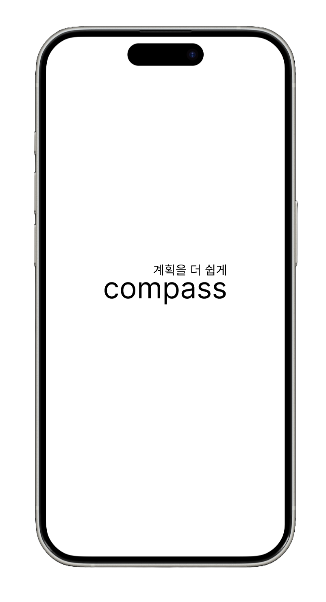

호흡의 주체란?
자율 신경계: 호흡은 주로 자율 신경계에 의해 조절됩니다. 이 신경계에는 체내 기능을 자동으로 조절하는 두 가지 하위 시스템이 있는데요,
바로 교감 신경계와 부교감 신경계입니다.
호흡은 주로 부교감 신경계에 의해 조절되며, 이는 일반적으로 우리가 의식적으로 조절하지 않아도 몸이 자동으로 조절하는 것입니다.
의지적 제어: 그러나 우리는 호흡을 의지적으로 제어할 수도 있습니다.
이것은 주로 우리가 숨을 깊게 들이마시거나 천천히 내쉬는 등의 특정한 호흡 기술을 사용하여 이루어집니다.
명상, 요가 및 숨 가쁜 상황에서 자신을 진정시키기 위한 기법들이 이에 해당합니다.
기본적으로 우리의 일상적인 호흡은 대부분 자동으로 이루어지지만, 의지적으로 조절하여 스트레스를 완화하거나 몸과 마음을 진정시키는데 도움이 되는 기술들도 있습니다.
일정관리에 시간을
들이지 마세요.

Ai 맞춤 일정,원하는 사람들과의 매칭
그리고
맞춤동영상까지!
이 앱을 써야할 이유 (장점)
인공지능 기반 플랫폼
인공지능이 사용자에 맞는 맞춤학습을 제공합니다.